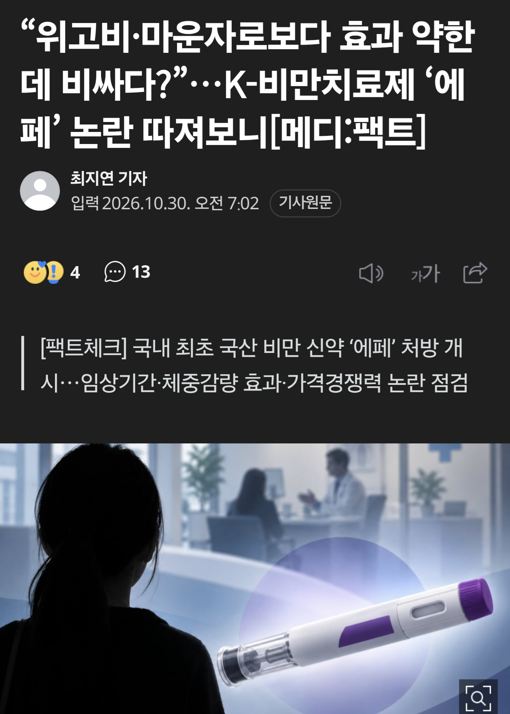
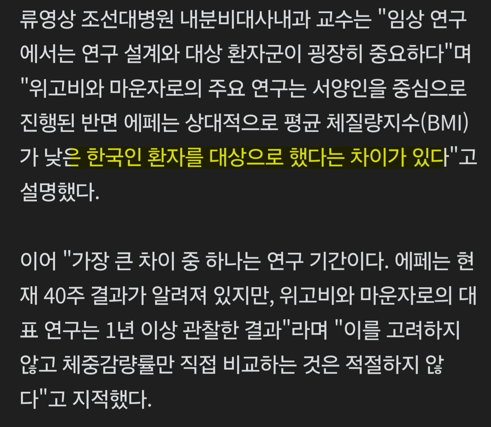
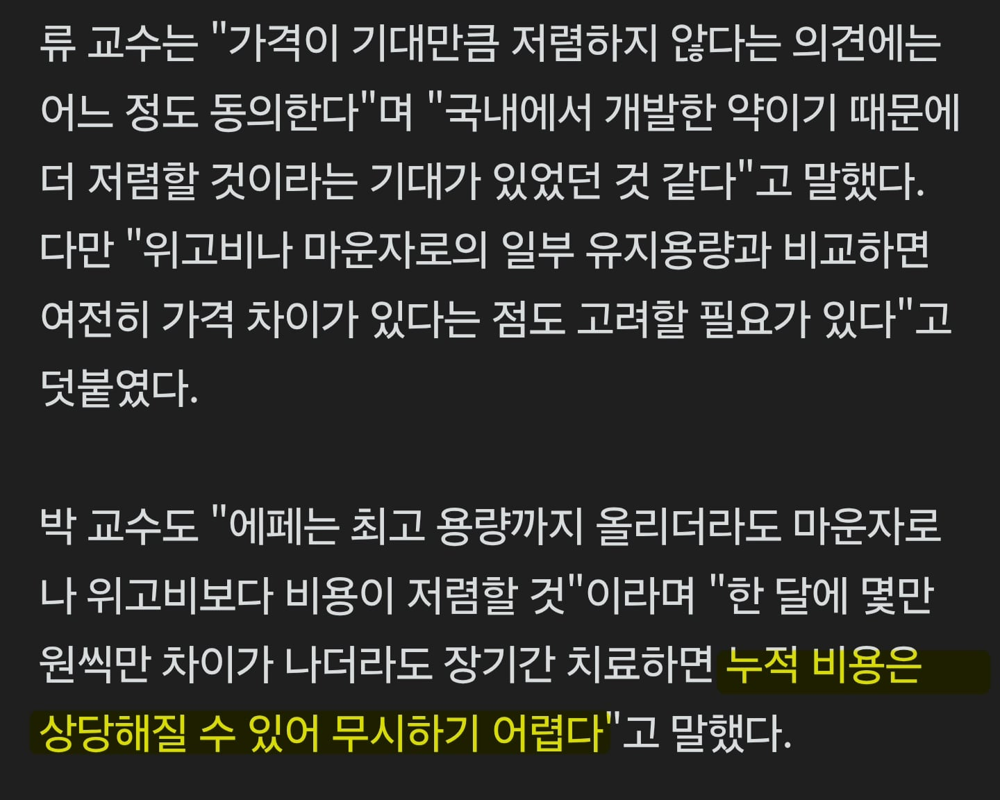

https://n.news.naver.com/article/296/0000106647?sid=102



체질량 낮은 한국인 대상이고 40주 결과라는 차이가 있어
장기간 치료하면 가격차이 무시못해
https://n.news.naver.com/article/296/0000106647?sid=102



체질량 낮은 한국인 대상이고 40주 결과라는 차이가 있어
장기간 치료하면 가격차이 무시못해
댓글
수집 당시 댓글 31개
ahalfsodaus · 20 시간 전
MCR · 20 시간 전
지도 몇만원 아끼겠다고
마운자로 버리고 에페 맞지는 않을 거면서
헬스장샤워실오줌싸기장인 · 20 시간 전
복지리 · 20 시간 전
자기 몸에 쓰는건데 가성비 따질때인가
멍멍왈왈멍왈멍 · 20 시간 전
팩트) 최고용량은 에페가 더 비싸다
Jcsi · 18 시간 전
에페 - 임상 규모 440여명 초고도 비만 제외
마운자로 - 임상 규모 20000여명 초고도비만 다수
자금력이 딸리니 어쩔수없다 해도 400여명해놓고 한국인전용은 왜자꾸 붙여
· 선장입수 · 13 시간 전
몰라 한국인은 네안데르탈인처럼 인종이 아예 다른가보지
· 잠적자 · 10 시간 전
이것만 봐도 심하네
최소 20000여명으로 안전성 어느정도 검증받은건데
· 유부녀단속반 · 9 시간 전
애국 마케팅 ㅋㅋㅋ
커뮤니티 · 14 시간 전
팩트다 팩트 ㅋㅋ
선장입수 · 13 시간 전
식염수 선에서 컷!
대장암 · 12 시간 전
그렇게 쩔면 수출해서 증명해 ㅋ
· 선장입수 · 8 시간 전
어허! 한.국.인 맞춤형이라 외국인한테는 효과가 없다구요!
감각차단함정 · 12 시간 전
위고비 마운자로도 글로벌 임상 이후로도 동아시아인, 일본이나,중국으로 타겟 임상 따로했었어 bmi 30 언저리로
똑같이 40주 비교해도 에페가 한참 떨어짐
그리고 이걸로 비교하면 에페가 훨씬 불리해 임상 보면 동아시아인들은 glp-1 효과를 더 잘 받는 편인데
위고비 마운자로는 글로벌 평균보다 동아시아인들 체중감소율이 좀 더 높게 나옴
저용량에서도 체중감소율이 15 16%까지 올라감. 여기서 에페 9% 자랑은 오히려 자충수임
그리고 장기간 가격차이 논할거면 이미 위고비 나눠맞기가 훨씬 싸게치는거 알지?
공식적으로 추천하는 방법이 아니라 다들 표면적으로는 말 안하지만 싸게 갈려면 위고비를 나눠맞지
위고비보다 체중감소율도 낮은데 나눠맞기도 안되고 비싼데다
이미 장기간 글로벌 데이터 쌓여서 검증된 약들 두고 신약 에페를 맞을 이유가 1도 없음
얼죽아 · 11 시간 전
씨발 뭐 한국인은 종이 다른가 ㅋㅋㅋㅋㅋㅋㅋㅋ
끼룰렝 · 10 시간 전
킹실이 아닙니다가 떠오르는데
컴잘알 · 9 시간 전
40주 이상을 해도 유의미한 감소가 없어서 그런거 아님?ㅋㅋㅋㅋㅋㅋㅋㅋㅋㅋㅋㅋㅋㅋㅋㅋㅋ
자라다 · 9 시간 전
안사요
주식졷밥 · 9 시간 전
현대차, 불닭볶음면을 생각해봐라
잘팔리면 국내에 팔게 없어요
왜 국내에 떠넘기려고 난리겠어? 답나왔죠 줴줴이야
데미소다복숭아 · 9 시간 전
그냥 에페 맞으면 지능 문제임
워차오 · 8 시간 전
아~ 신토불이야~
년째 꼴빠 · 8 시간 전
한미 이사진들이 우리회사에 ㅈㄴ 이직한다 ㅋㅋㅋ
버거는치킨인가소인가 · 7 시간 전
이 새끼들 캣피더 같은 말을 하고 있음ㅋㅋ
다이버 · 6 시간 전
올해 본 기사중에 제일 역겨운듯
은하방망이협객 · 6 시간 전
차라리 제발 사달라고 빌어라
유덕창 · 6 시간 전
의사까지 동원해서 여론을 조성하네...
SPRINTF · 6 시간 전
비만약 지랄말고 외식, 식자재, 가공식음료 당분이랑 탄수화물 이나 줄이지😡😡😡 요즘 밖에서 뭘 처먹던 달달하고 탄수화물덩어리임.
하고싶은말만함 · 5 시간 전
진짜 식약처 개역겨운 놈들인데 이거 처벌 안받는데 레전드네, 누가봐도 한미약품 밀어주는건데
후릅따 · 4 시간 전
기자가 저러면 안되지 않나
에어컨쟁이 · 3 시간 전
그래서 얼마받았냐
년째 MS단 졸개 · 3 분 전
윗선에 로비할 돈으로 에페 가격 깎았으면 그나마 맞을 사람 한줌이라도 더 늘었겠다 참나